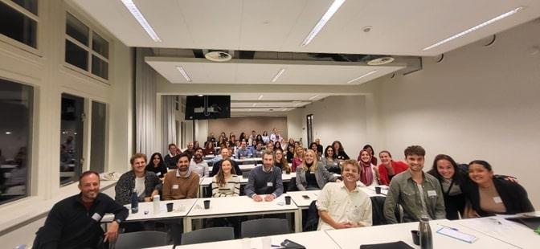
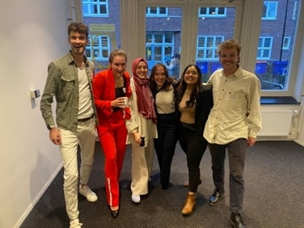
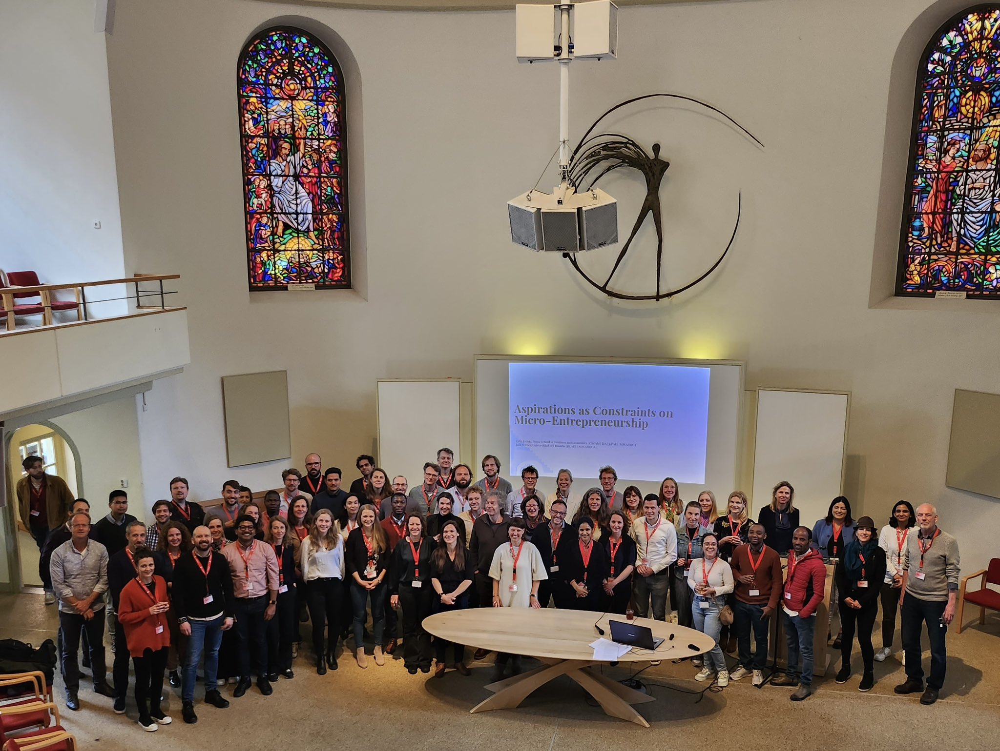
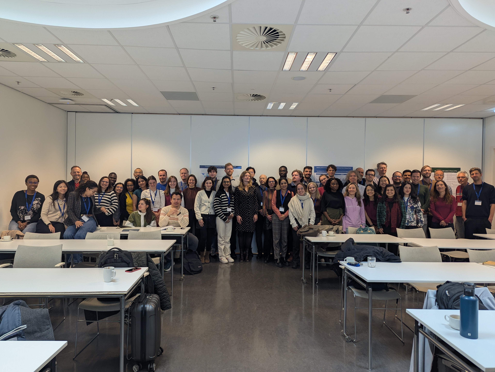
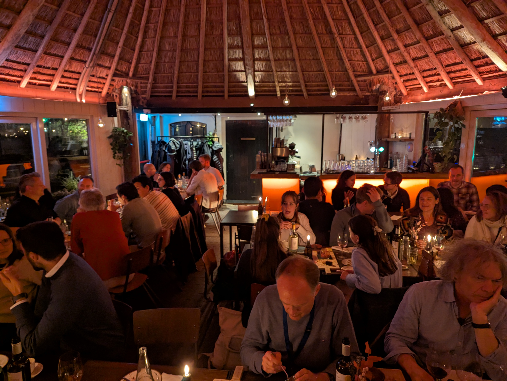

by Mariajose Silva Vargas, PhD.
Our mission
Facilitating knowledge exchange and connections among development economists based in the Netherlands.
Our members are researchers from seven participating universities: Groningen, Nijmegen, Tilburg, UNU-MERIT, Utrecht, VU Amsterdam, and Wageningen. We organize two annual events — a general workshop and one dedicated to PhD students — and we are affiliated to the European Development Economics Group.
JOIN US
Connect with researchers in the Netherlands working on Development Economics. Seven participating universities take turns hosting engaging events where we share knowledge and new ideas in the field.
Upcoming events





Moments from past DuDE events, publicly shared by participants.
Explore DuDE
Blog posts with research highlights, our events, and the people behind the network.